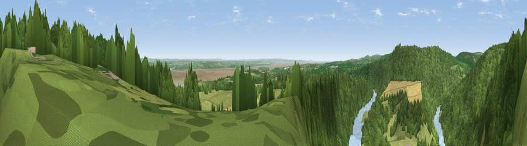

Viewpoint near Tidenham Chase
#11224 in England · top 17% of its area beats it · near Tidenham ChaseWhere it is
The exact computed spot (ST 54925 97425). Click the marker for map links.
The view, rendered

A 360° render of this exact spot computed from the terrain model, tree cover and land cover — summer colours, afternoon light, calibrated against photographs of famous viewpoints. Real trees, hedges and buildings will differ in detail.
The panorama
Grey silhouette: terrain skyline in each direction (720 bearings, Earth curvature and refraction included). Dashed green: skyline with trees (+15 m) and buildings (+8 m) as obstacles. Blue strip: how far the ground is visible on each bearing.
Where the view opens
Wedge length = distance to the farthest visible ground on that bearing (vegetation-aware). Rings at 10, 25 and 50 km.
What fills the view
59% woodland · 20% grassland · 18% water · 3% cropland ·
Angular shares of the visible panorama (visual magnitude), not map area. Landscape diversity 0.47 (0–1 Shannon).
Key numbers
More beautiful places nearby
The staircase of upgrades: each row has a higher view potential than everything closer. Driving times are estimates from straight-line distance, calibrated against real road routing — check an actual route before setting out.
| Place | Direction | Drive | Score |
|---|---|---|---|
| Viewpoint near Tidenham | SE · 1 km | ~3 min | 64.6 |
| Viewpoint near Woolaston | NE · 3 km | ~8 min | 66.1 |
| Viewpoint near Hewelsfield | NE · 4 km | ~10 min | 69.6 |
| Viewpoint near Hewelsfield | NNE · 5 km | ~10 min | 70.7 |
| Viewpoint near Yorkley | NE · 13 km | ~24 min | 70.9 |
| Buck Stone | N · 15 km | ~27 min | 71.0 |
| Viewpoint near Stinchcombe | E · 19 km | ~32 min | 78.7 |
| Viewpoint near Stinchcombe | E · 19 km | ~32 min | 80.5 |
51.67378, -2.65324 · source: screening · position refined by local search. Computed location — check access rights before visiting.